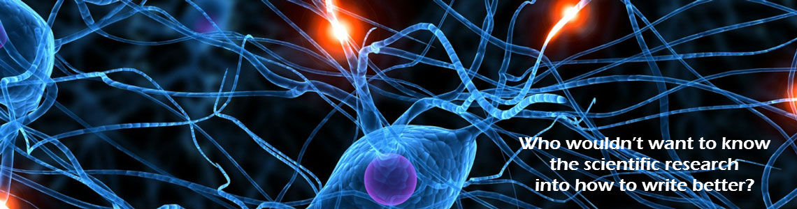

The Neuroscience of Writing

Scientists have explored almost every aspect of the world, inside and out. They’ve dived down to the sub-atomic and expanded our understanding to the edges of our universe. They’ve explored our psyche and our psychology. They’ve analyzed our history and are constantly (and incorrectly) trying to predict our future.
And yet until now, though they’ve discussed the universe in excruciating detail very few have spent much serious time exploring the tools used to have that discussion. They have focused on the message without really spending any time on the means used to convey it. Why, I wonder, could that be it? Has it been an oversight?
To be fair, I myself had not really thought about it until I stumbled across Yellowlees Douglas’ The Reader’s Brain: How Neuroscience Can Make You a Better Writer. The moment I did I couldn’t believe I never had. After all, it seems such an obvious area for exploration. Who wouldn’t want to know the scientific research into how to write better?
As the book is a bit of a tome (and, at $75 a pricey one at that) let me give you a few highlights.
The Rule of Three
You know how your writing teacher told you that you should tell your audience what you’re going to say, then say it, then tell then what you’ve said? Well it turns out there’s actually something to that.
It’s all a matter of priming. By initially exposing your audience to something you then instruct them about it, you’ll help them remember. This can be true even if they saw the original reference up to a week previously! Obviously, you might not want to wait that long in your text.
The Third ‘Tell Them’
The observant among you might have noticed that the above post only dealt with two of the ‘tells’. What, you mutter, about the third one? Well, good on you for noticing that. Give yourselves a little pat on the back.
The third tell them is all about something called ‘recency’. It turns out that the last thing mentioned is what we remember best. That seems to jell with other research, which suggests that what happens at the end is very important to us. For that reasons if you’re trying to educate, it’s important to tell them that third time.
It also means that if you want some point to be really salient in your reader’s mind you should finish with it. And here I thought that the conclusion was just the waffle at the end where authors jump to unfounded conclusions! Oh wait, it still can be. This in no way disproves that point. It’s just that it is the waffle I’m most likely to remember.
Hiding the Bad Stuff
Some minds might have already figured out what comes next, as in a way it follows logically from the previous point. In that case I’m really impressed. You’re smarter than I am. I didn’t get there on my own. But then I walked out of the house this morning wearing one brown and one black shoe, so I might not be your best yard stick. (That’s actually true. It wasn’t my best day).
If the best place for somebody to remember something is at the end of the paragraph, then the place where it will have the least impact should be earlier. It actually turns out that it’s about the middle of the paragraph. So if you’ve got something negative to tell somebody, put it about here. For example, your nostrils are too big. Now if I just keep going after that zinger of an insult, chances are you will not feel half as offended as when I’d finished the sentence with that. And that’s therefore a useful method to lessen the impact of bad news. So next time you have to fire somebody, do it in the middle of the paragraph.
Causality Machines
I’ll do you one better. You can use the fact that we love cause and effect to lessen the impact of bad news even more. Instead of coming straight out with it like dad taught us to do, we should first explain why it went wrong. In this way the reader connects the reason with the failure and is therefore far more likely to accept our explanation, while if you do the opposite and first tell them of your failure, you’ll just get their hackles up. Then they’re far more likely to think of your reason as simply an excuse.
The Take Home Message
So wait, this is the bit you’re going to remember? I’m still trying to internalize these lessons myself, you see. Well, if this is the important bit, then let me summarize the main points. First of all, repetition helps.
Secondly, give your reasons why something went wrong before you tell them what went wrong.
And thirdly, position matters. Not just in the text as a whole – obviously the conclusion is important – but also in the paragraph. If you want your reader to not remember something or lessen its impact, put it in the middle. If you want them to recall it later put it at the end. So, just to drive the point home, this would be a bad place for me to again raise the size of your nostrils.